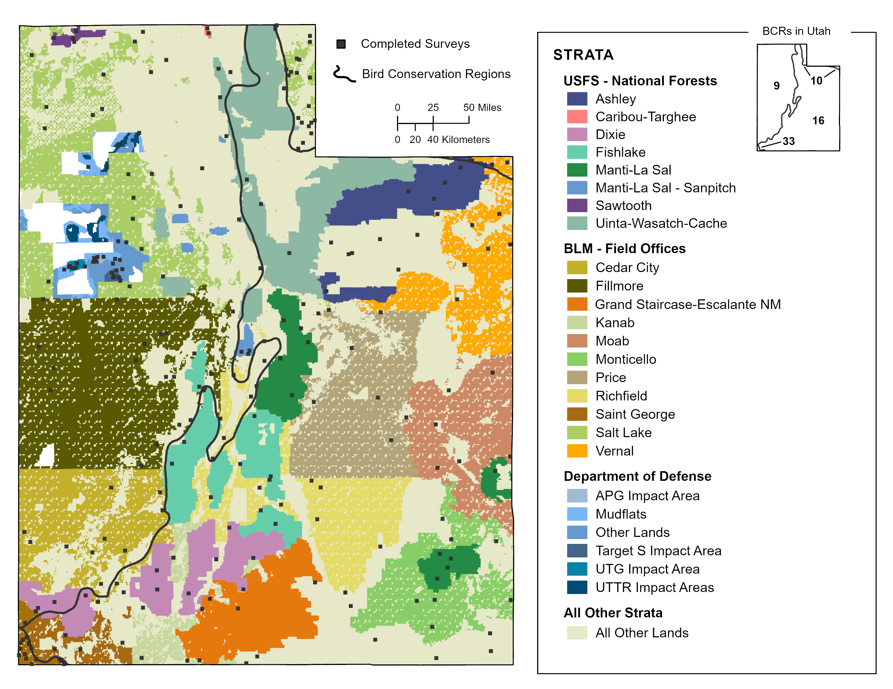

17 Utah

Utah Statewide: Total
We obtained results for Utah Statewide: Total by compiling and jointly analyzing data from 42 strata.
Field technicians completed 249 of 251 planned surveys (99%) in 2022. Technicians conducted 2815 point counts within the 249 surveyed grid cells between May 2 and July 15. They detected 187 bird species, including 13 priority species.
Bird Conservancy estimated densities and population sizes for 214 species that were detected in any year during which surveys were conducted, 14 of which are priority species. The data yielded robust density estimates (CV < 50%) for 93 species.
Bird Conservancy estimated the proportion of 1 km² grid cells occupied (Ψ, Psi) throughout Utah Statewide: Total for 220 species that were detected in any year during which surveys were conducted, 15 of which are priority species. The data yielded robust occupancy estimates (CV < 50%) for 135 species.
To view a map of survey locations, density and occupancy results and species counts within Utah Statewide: Total across all years of the project, follow the web link below. Hit “Ok” on the Rocky Mountain Avian Data Center Disclaimer and hit the “Run Query” button highlighted in red located near the top of the page (the map will zoom to the area of interest). To view occupancy, density, or species counts results, click on the respective tab in the upper left above the map.
All Other Lands in Utah
We obtained results for All Other Lands in Utah by compiling and jointly analyzing data from four strata.
Field technicians completed 111 of 110 planned surveys (101%) in 2022. Technicians conducted 1272 point counts within the 111 surveyed grid cells between May 2 and July 13. They detected 161 bird species, including 8 priority species.
Bird Conservancy estimated densities and population sizes for 192 species that were detected in any year during which surveys were conducted, 12 of which are priority species. The data yielded robust density estimates (CV < 50%) for 85 species.
Bird Conservancy estimated the proportion of 1 km² grid cells occupied (Ψ, Psi) throughout All Other Lands in Utah for 195 species that were detected in any year during which surveys were conducted, 12 of which are priority species. The data yielded robust occupancy estimates (CV < 50%) for 98 species.
To view a map of survey locations, density and occupancy results and species counts within All Other Lands in Utah across all years of the project, follow the web link below. Hit “Ok” on the Rocky Mountain Avian Data Center Disclaimer and hit the “Run Query” button highlighted in red located near the top of the page (the map will zoom to the area of interest). To view occupancy, density, or species counts results, click on the respective tab in the upper left above the map.
17.1 Utah BCR 9
Utah BCR 9: Total
We obtained results for Utah BCR 9: Total by compiling and jointly analyzing data from 17 strata.
Field technicians completed 99 of 101 planned surveys (98%) in 2022. Technicians conducted 1156 point counts within the 99 surveyed grid cells between May 7 and July 14. They detected 120 bird species, including 4 priority species.
Bird Conservancy estimated densities and population sizes for 160 species that were detected in any year during which surveys were conducted, 10 of which are priority species. The data yielded robust density estimates (CV < 50%) for 57 species.
Bird Conservancy estimated the proportion of 1 km² grid cells occupied (Ψ, Psi) throughout Utah BCR 9: Total for 168 species that were detected in any year during which surveys were conducted, 14 of which are priority species. The data yielded robust occupancy estimates (CV < 50%) for 84 species.
To view a map of survey locations, density and occupancy results and species counts within Utah BCR 9: Total across all years of the project, follow the web link below. Hit “Ok” on the Rocky Mountain Avian Data Center Disclaimer and hit the “Run Query” button highlighted in red located near the top of the page (the map will zoom to the area of interest). To view occupancy, density, or species counts results, click on the respective tab in the upper left above the map.
All Other Lands in Utah BCR 9
We obtained results for All Other Lands in Utah BCR 9 by compiling and analyzing data from one stratum.
Field technicians completed 41 of 40 planned surveys (102%) in 2022. Technicians conducted 471 point counts within the 41 surveyed grid cells between May 7 and June 28. They detected 85 bird species, including 2 priority species.
Bird Conservancy estimated densities and population sizes for 134 species that were detected in any year during which surveys were conducted, 7 of which are priority species. The data yielded robust density estimates (CV < 50%) for 45 species.
Bird Conservancy estimated the proportion of 1 km² grid cells occupied (Ψ, Psi) throughout All Other Lands in Utah BCR 9 for 132 species that were detected in any year during which surveys were conducted, 7 of which are priority species. The data yielded robust occupancy estimates (CV < 50%) for 51 species.
To view a map of survey locations, density and occupancy results and species counts within All Other Lands in Utah BCR 9 across all years of the project, follow the web link below. Hit “Ok” on the Rocky Mountain Avian Data Center Disclaimer and hit the “Run Query” button highlighted in red located near the top of the page (the map will zoom to the area of interest). To view occupancy, density, or species counts results, click on the respective tab in the upper left above the map.
17.2 Utah BCR 10
Utah BCR 10: Total
We obtained results for Utah BCR 10: Total by compiling and jointly analyzing data from five strata.
Field technicians completed 25 of 26 planned surveys (96%) in 2022. Technicians conducted 260 point counts within the 25 surveyed grid cells between May 21 and July 14. They detected 84 bird species, including 4 priority species.
Bird Conservancy estimated densities and population sizes for 130 species that were detected in any year during which surveys were conducted, 6 of which are priority species. The data yielded robust density estimates (CV < 50%) for 41 species.
Bird Conservancy estimated the proportion of 1 km² grid cells occupied (Ψ, Psi) throughout Utah BCR 10: Total for 128 species that were detected in any year during which surveys were conducted, 6 of which are priority species. The data yielded robust occupancy estimates (CV < 50%) for 51 species.
To view a map of survey locations, density and occupancy results and species counts within Utah BCR 10: Total across all years of the project, follow the web link below. Hit “Ok” on the Rocky Mountain Avian Data Center Disclaimer and hit the “Run Query” button highlighted in red located near the top of the page (the map will zoom to the area of interest). To view occupancy, density, or species counts results, click on the respective tab in the upper left above the map.
All Other Lands in Utah BCR 10
We obtained results for All Other Lands in Utah BCR 10 by compiling and analyzing data from one stratum.
Field technicians completed 14 of 15 planned surveys (93%) in 2022. Technicians conducted 158 point counts within the 14 surveyed grid cells between May 21 and June 27. They detected 45 bird species, including 4 priority species.
Bird Conservancy estimated densities and population sizes for 91 species that were detected in any year during which surveys were conducted, 4 of which are priority species. The data yielded robust density estimates (CV < 50%) for 16 species.
Bird Conservancy estimated the proportion of 1 km² grid cells occupied (Ψ, Psi) throughout All Other Lands in Utah BCR 10 for 87 species that were detected in any year during which surveys were conducted, 4 of which are priority species. The data yielded robust occupancy estimates (CV < 50%) for 28 species.
To view a map of survey locations, density and occupancy results and species counts within All Other Lands in Utah BCR 10 across all years of the project, follow the web link below. Hit “Ok” on the Rocky Mountain Avian Data Center Disclaimer and hit the “Run Query” button highlighted in red located near the top of the page (the map will zoom to the area of interest). To view occupancy, density, or species counts results, click on the respective tab in the upper left above the map.
17.3 Utah BCR 16
Utah BCR 16: Total
We obtained results for Utah BCR 16: Total by compiling and jointly analyzing data from 18 strata.
Field technicians completed 108 of 107 planned surveys (101%) in 2022. Technicians conducted 1191 point counts within the 108 surveyed grid cells between May 7 and July 15. They detected 146 bird species, including 6 priority species.
Bird Conservancy estimated densities and population sizes for 188 species that were detected in any year during which surveys were conducted, 9 of which are priority species. The data yielded robust density estimates (CV < 50%) for 81 species.
Bird Conservancy estimated the proportion of 1 km² grid cells occupied (Ψ, Psi) throughout Utah BCR 16: Total for 185 species that were detected in any year during which surveys were conducted, 9 of which are priority species. The data yielded robust occupancy estimates (CV < 50%) for 116 species.
To view a map of survey locations, density and occupancy results and species counts within Utah BCR 16: Total across all years of the project, follow the web link below. Hit “Ok” on the Rocky Mountain Avian Data Center Disclaimer and hit the “Run Query” button highlighted in red located near the top of the page (the map will zoom to the area of interest). To view occupancy, density, or species counts results, click on the respective tab in the upper left above the map.
All Other Lands in Utah BCR 16
We obtained results for All Other Lands in Utah BCR 16 by compiling and analyzing data from one stratum.
Field technicians completed 41 of 40 planned surveys (102%) in 2022. Technicians conducted 461 point counts within the 41 surveyed grid cells between May 10 and July 13. They detected 112 bird species, including 3 priority species.
Bird Conservancy estimated densities and population sizes for 159 species that were detected in any year during which surveys were conducted, 8 of which are priority species. The data yielded robust density estimates (CV < 50%) for 72 species.
Bird Conservancy estimated the proportion of 1 km² grid cells occupied (Ψ, Psi) throughout All Other Lands in Utah BCR 16 for 156 species that were detected in any year during which surveys were conducted, 8 of which are priority species. The data yielded robust occupancy estimates (CV < 50%) for 67 species.
To view a map of survey locations, density and occupancy results and species counts within All Other Lands in Utah BCR 16 across all years of the project, follow the web link below. Hit “Ok” on the Rocky Mountain Avian Data Center Disclaimer and hit the “Run Query” button highlighted in red located near the top of the page (the map will zoom to the area of interest). To view occupancy, density, or species counts results, click on the respective tab in the upper left above the map.
17.4 Utah BCR 33
Utah BCR 33: Total
We obtained results for Utah BCR 33: Total by compiling and jointly analyzing data from two strata.
Field technicians completed all planned surveys (100%) in 2022. Technicians conducted 208 point counts within the 17 surveyed grid cells between May 2 and May 21. They detected 101 bird species, including 3 priority species.
Bird Conservancy estimated densities and population sizes for 112 species that were detected in any year during which surveys were conducted, 3 of which are priority species. The data yielded robust density estimates (CV < 50%) for 24 species.
Bird Conservancy estimated the proportion of 1 km² grid cells occupied (Ψ, Psi) throughout Utah BCR 33: Total for 114 species that were detected in any year during which surveys were conducted, 3 of which are priority species. The data yielded robust occupancy estimates (CV < 50%) for 28 species.
To view a map of survey locations, density and occupancy results and species counts within Utah BCR 33: Total across all years of the project, follow the web link below. Hit “Ok” on the Rocky Mountain Avian Data Center Disclaimer and hit the “Run Query” button highlighted in red located near the top of the page (the map will zoom to the area of interest). To view occupancy, density, or species counts results, click on the respective tab in the upper left above the map.
All Other Lands in Utah BCR 33
We obtained results for All Other Lands in Utah BCR 33 by compiling and analyzing data from one stratum.
Field technicians completed all planned surveys (100%) in 2022. Technicians conducted 182 point counts within the 15 surveyed grid cells between May 2 and May 21. They detected 95 bird species, including 2 priority species.
Bird Conservancy estimated densities and population sizes for 105 species that were detected in any year during which surveys were conducted, 1 of which are priority species. The data yielded robust density estimates (CV < 50%) for 31 species.
Bird Conservancy estimated the proportion of 1 km² grid cells occupied (Ψ, Psi) throughout All Other Lands in Utah BCR 33 for 106 species that were detected in any year during which surveys were conducted, 1 of which are priority species. The data yielded robust occupancy estimates (CV < 50%) for 33 species.
To view a map of survey locations, density and occupancy results and species counts within All Other Lands in Utah BCR 33 across all years of the project, follow the web link below. Hit “Ok” on the Rocky Mountain Avian Data Center Disclaimer and hit the “Run Query” button highlighted in red located near the top of the page (the map will zoom to the area of interest). To view occupancy, density, or species counts results, click on the respective tab in the upper left above the map.